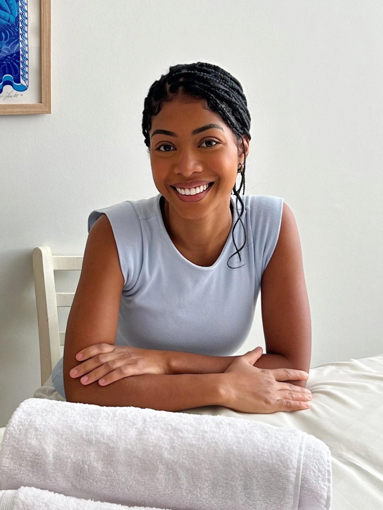

QUEM VAI ATÉ VOCÊ
Ligia Possu
Formada em Fisiomassoterapia, 2024
Atendendo no Rio há quase 3 anos
Atendo em português, inglês, espanhol e italiano
A massoterapia entrou na minha vida pela vontade de trabalhar diretamente com as pessoas. Acredito no poder da prevenção e promovo isso através de uma das medicinas mais antigas e relevantes do mundo, a medicina chinesa.
Poder proporcionar saúde e bem-estar de forma humana e natural me traz uma grande satisfação pessoal. Me especializei para oferecer alívio de dores musculares, redução do estresse e melhora da qualidade de vida.
Acredito no toque como ferramenta de cuidado e no atendimento como um espaço seguro de acolhimento.
Levo lençóis e toalhas esterilizados, usados uma vez só. Se você já tem maca, me diga quando marcar.